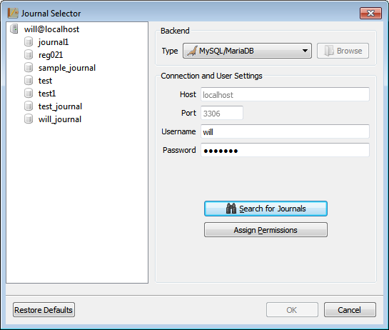

Getting Started with RoboJournal
Sections
- First-Run Overview
- Creating a New Journal Database
- Assigning Permissions to a Database
- Connecting to an Existing Journal Database
First-Run Overview
RoboJournal stores its settings in configuration files. Instead of sharing the same settings for all users on the system, each user has a .robojournal folder containing a robojournal.ini configuration file in his or her home directory. This design allows each user to customize the same installation of RoboJournal to his or her own specifications.
RoboJournal automatically initiates first-run mode if it can't find a valid configuration file when it starts. This is guaranteed to happen the first time you use RoboJournal after installing it. The purpose of first-run mode is to establish the parameters used to govern RoboJournal's behavior. These parameters are written to a configuration file immediately after you have finished using the first-run tool.
You can force RoboJournal to reconfigure itself by deleting your current configuration file. This action triggers first-run mode the next time you start the program. You can also open your configuration file in a text editor (like Vim or Notepad) and edit it manually. Direct editing is only recommended if you need to make minor changes since it is easy to accidentally break your configuration file. If you already have a pre-existing configuration file, you can skip the first-run process altogether by placing that configuration file in your home directory's .robojournal folder; RoboJournal will detect and use that configuration file instead of initiating first-run mode.
The Welcome to RoboJournal dialog is displayed whenever RoboJournal initiates first-run mode:
Figure 1: The Welcome to RoboJournal dialog.
During first-run, you must decide whether you want to create a new (blank) journal or configure RoboJournal to use an existing journal database. Select the desired option on the Welcome to RoboJournal window and then click the OK button to continue.
Alternatively, you can abort the configuration process by clicking the Cancel button. However, RoboJournal will continue to initiate first-run mode each time you use it until a configuration file has been created.
Creating a New Journal Database
The Journal Creator consists of a tabbed interface. Each tab must be completed in full before a journal can be created. Completing this dialog requires root-level access to the MySQL installation on the host you specify. Without root access, you will not be able to create any journals.
The Set this new journal as my default checkbox is always checked (and locked) during first-run. If you run the Journal Creator again at a later time, this checkbox (then unchecked and unlocked) gives you the option to replace the current default with the brand-new journal.
Complete the following procedure to create a brand-new, empty journal:
- Select the Create a new journal database option on the Welcome to RoboJournal dialog and click the OK button. The Journal Creator dialog is displayed: Figure 2: Launching the Journal Creator during first-run.
- Click the 2. Basic Settings tab. The fields that govern essential parameters for the new journal are displayed:Figure 3: Journal Creator — Basic Settings tab.
- Enter a name for this journal database into the Journal name field. This name must be unique (no other database with the same name should exist on the indicated host). Short names are best; use underscores instead of spaces to separate words.
- Enter the host for this journal into the Journal host field (if necessary). The default value of "localhost" is used if this field is left blank. Localhost (also known as "127.0.0.1") refers to the current machine that RoboJournal is running on. If you intend to store RoboJournal and the database on the same machine, leave the Journal host field blank. Otherwise, enter the domain name or IP address of the machine on which the journal should be stored (that machine must have a working MySQL server process).
- Specify a username to associate with this journal and enter it into the Username field. You may not use "root" for the username!
- Choose a password to associate with the username you specified in the previous step. Enter this password in the Password and Repeat fields. The contents of the Password and Repeat fields are always obscured for security purposes but the password indicator text notifies you when both passwords match. When both passwords are identical, the OK button for the Journal Creator is unlocked.
- Switch to the 3. Authentication tab by clicking on it. The authentication-related options are displayed:Figure 4: Journal Creator — Authentication tab.
- Enter the Root password for the host you specified in the Journal Host field on the 2. Basic Settings tab. The contents of the Root password field are always obscured for security reasons.
- RoboJournal automatically sets a value of "3306" for the Port field; this is the standard port for MySQL servers. Make sure this value is correct for your particular situation and change it if necessary.
- Click the OK button on the Journal Creator dialog
window. A confirmation dialog is displayed if the journal creation process
was successful.
FYI: The next two steps are displayed only if RoboJournal is in first-run mode. Otherwise, RoboJournal preserves the user's full name and gender settings from the current configuration.
- A text input dialog is displayed. Enter your name (as you prefer it) and click the OK button. You may click the Cancel button if you wish to skip this step.Figure 5: This value sets the user's full name in the configuration file.
- A gender selection dialog is displayed. Select your gender by clicking the appropriate button.Figure 6: The gender selection dialog determines which avatar icon is used while a connection is active.
RoboJournal is now successfully configured. For more information on how to use core RoboJournal functionality, refer to the RoboJournal Fundamentals documentation.
Assigning Permissions to a Database
You can use the Journal Selector to locate databases that have been restored from SQL dump files or migrated from other systems. Journals that you have created with your own user account (and have never been migrated or restored) can be located with relative ease. On the other hand, journals that have been imported from other sources or restored from a backup usually require some modifications before RoboJournal can even locate them.
In the same manner, remote journal databases usually require permission changes before you can access them from your computer (even if the remote database has never been restored from a backup or migrated from a different server). This is a deliberate security measure intended to reduce the likelihood of unauthorized remote tampering by restricting access to a few "whitelisted" users while blocking all others. All permission changes to a remote database require root-level access privileges and must be performed on the same machine where the database you wish to use is stored. To make the changes, you must either access the machine directly (if possible) or connect to it via a remote access method like SSH or VNC.
MySQL Procedure
Restored databases are associated with the "root" user account by default and are therefore inaccessible to regular users. You must make some changes to the MySQL configuration in order to make a restored or migrated database easy to use with RoboJournal. This process requires root-level access to the MySQL console.
In the following procedure, assume that "sample_journal" represents an imported database while "john_doe" represents the user account you intend to associate the database with (and "123" is the password associated with the john_doe account). You must obviously change these values to those appropriate to your particular situation in order for this procedure to work properly in a real-world context:
- Gain access (physically or otherwise) to the machine that contains the journal you wish to use.
- Log in to the MySQL command line as root. The exact procedure varies by
operating system:
- On Linux, open a terminal and type mysql -u root -p and press Enter.
- On Windows, click the Start Menu and select All Programs » MySQL » MySQL Server 5.5 » MySQL 5.5 Command Line Client (the "5.5" may vary depending on which version you have installed but the location is likely the same).
- Type the root password when prompted to do so (the password is hidden for security purposes as you type it). Press Enter.
- A mysql> command prompt is displayed if the login was successful.
- Create a user account for yourself (if necessary) with the with the CREATE
USER command. You may skip this step if your user account already
exists.
- Otherwise, type CREATE USER 'john_doe'@'localhost' IDENTIFIED BY '123'; and press Enter (don't forget to substitute the real username, host, and password in the query). MySQL displays, Query OK, 0 Rows Affected if the command was successful.
- Use the GRANT command
to give your user account (in this case, john_doe) permission to use the
database you imported; type GRANT
INSERT,DELETE,UPDATE,SELECT ON sample_journal.entries TO
'john_doe'@'localhost'; and press Enter (don't forget to substitute
the real journal name, username, and host in the query). MySQL displays,
Query OK, 0 Rows Affected if the command was
successful.
FYI: You should only grant permissions that are absolutely necessary (i.e. INSERT, DELETE, UPDATE, and SELECT) because additional permissions will not make your account work any better and can actually be dangerous to other databases.
- Type exit and press Enter to disconnect from the MySQL command line.
MySQL requires you to use a GRANT query to give yourself permission to view and/or modify a remote journal database on your workstation. For instance, assume that a journal database called "test" is stored on 192.168.2.1 and you wish to access it through the "john_doe" user account on your workstation at 192.168.2.3. You would log in (as root) to the MySQL command interface on 192.168.2.1 and run, GRANT INSERT,DELETE,UPDATE,SELECT ON test.entries TO 'john_doe'@'192.168.2.3' to give yourself permission to access the journal.
You are ready to begin the journal selection procedure once you have assigned the correct permissions to the database you wish to set as your default.
Connecting to an Existing Journal Database
RoboJournal's journal selection tool provides an easy way to select the default journal during the first-run session. This tool allows you to specify the username and password for a pre-existing account on a host machine (local or remote). Once you have provided this information, RoboJournal displays all databases associated with that specific user account.
In order to use this tool successfully, you must know the correct username and password for the account you wish to access since RoboJournal currently has no way of retrieving a full list of accounts from the host. Furthermore, this tool only lists databases that are associated with the user account you provide (all others are ignored). Before you use the Journal Selector, you must assign the correct user permissions to the database you wish to use or RoboJournal will be unable to find it.
- Click to select the Connect to an existing journal
database option on the Welcome to RoboJournal dialog and click the
OK button.
 Figure 7: The Journal Selector is
launched via the Welcome to RoboJournal dialog.
Figure 7: The Journal Selector is
launched via the Welcome to RoboJournal dialog. - The Journal Selector window is displayed. Change the Host and Port values if necessary (you must uncheck the Use default host and port box to make the Host and Port fields writable).Figure 8: The Host and Port fields are automatically populated with the most common default values.
- Enter the appropriate username and password into their respective fields (indicated within the red circle in Figure 9). These values should belong to the account you wish to use as your own (do not use root). The contents of the Password field are always obscured for security reasons. Figure 9: Fill in the indicated fields to display a list of journals associated with a specific account.
- Click the Search for Journals button.
- A list of journals associated with the user account you provided is displayed in the large open area on the left:Figure 10: The Journal Selector displays all databases associated with a specific user account.
- Select the journal you wish to use by clicking on its node in the hierarchy. Once a journal has been selected, the OK button on the Journal Selector window is unlocked (as shown in Figure 11).
- Click the OK button to continue.
 Figure 11: The OK button unlocks once you
have selected an entry.
FYI: The next two steps are displayed only if RoboJournal is in first-run mode. Otherwise, RoboJournal preserves the user's full name and gender settings from the current configuration.
Figure 11: The OK button unlocks once you
have selected an entry.
FYI: The next two steps are displayed only if RoboJournal is in first-run mode. Otherwise, RoboJournal preserves the user's full name and gender settings from the current configuration.
If RoboJournal is not in first-run mode, you are asked to confirm your decision to replace your current default journal. Your previous settings are not changed at all if you decide to abort. - A text input dialog is displayed. Enter your name (as you prefer it) and click the OK button. You may click the Cancel button if you wish to skip this step.Figure 12: This value sets the user's full name in the configuration file.
- A gender selection dialog is displayed. Select your gender by clicking the appropriate button.Figure 13: The gender selection dialog determines which avatar icon is used while a connection is active.
RoboJournal is now successfully configured. For more information on how to use core RoboJournal functionality, refer to the RoboJournal Fundamentals documentation.
Copyright © 2013 by Will Kraft. All parts of the RoboJournal Documentation are covered by the terms of the GNU Free Documentation License.